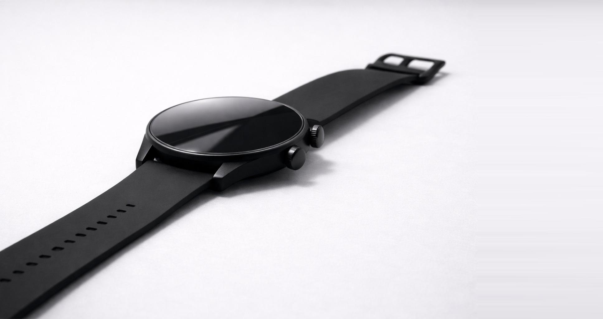
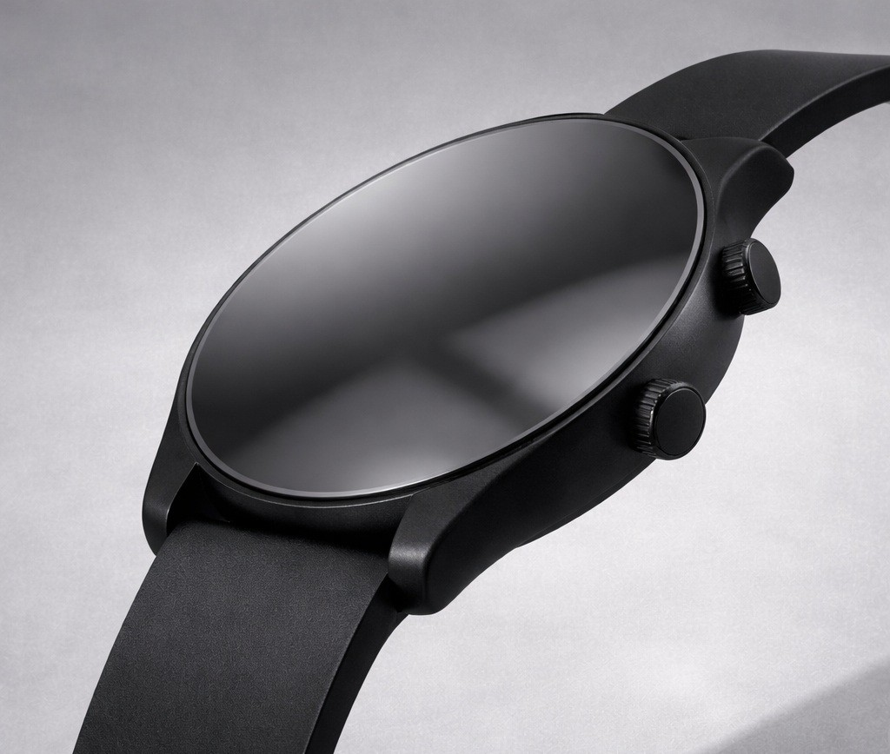
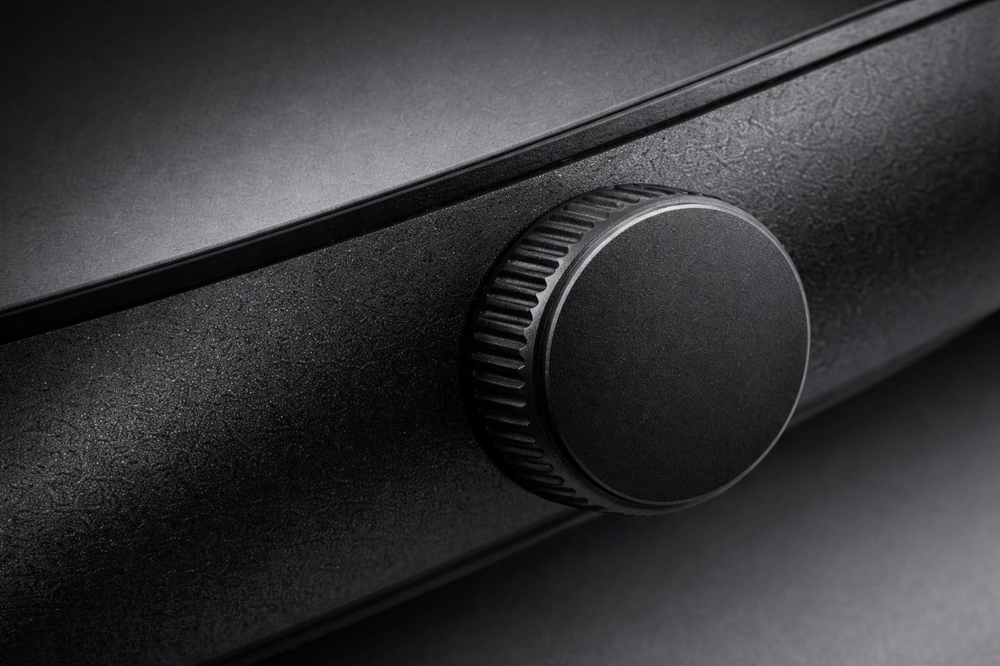
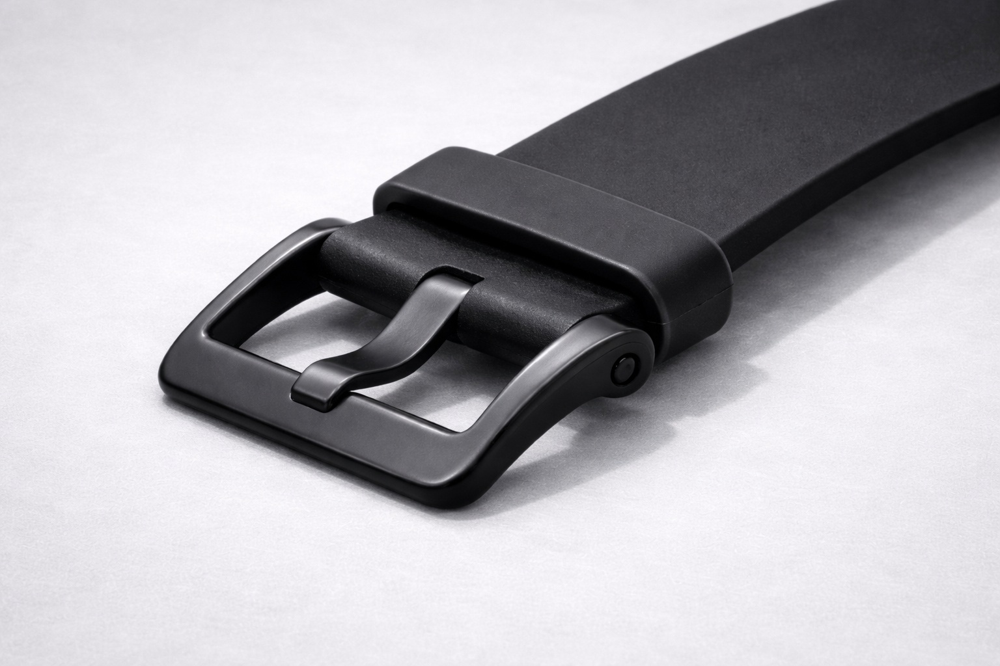
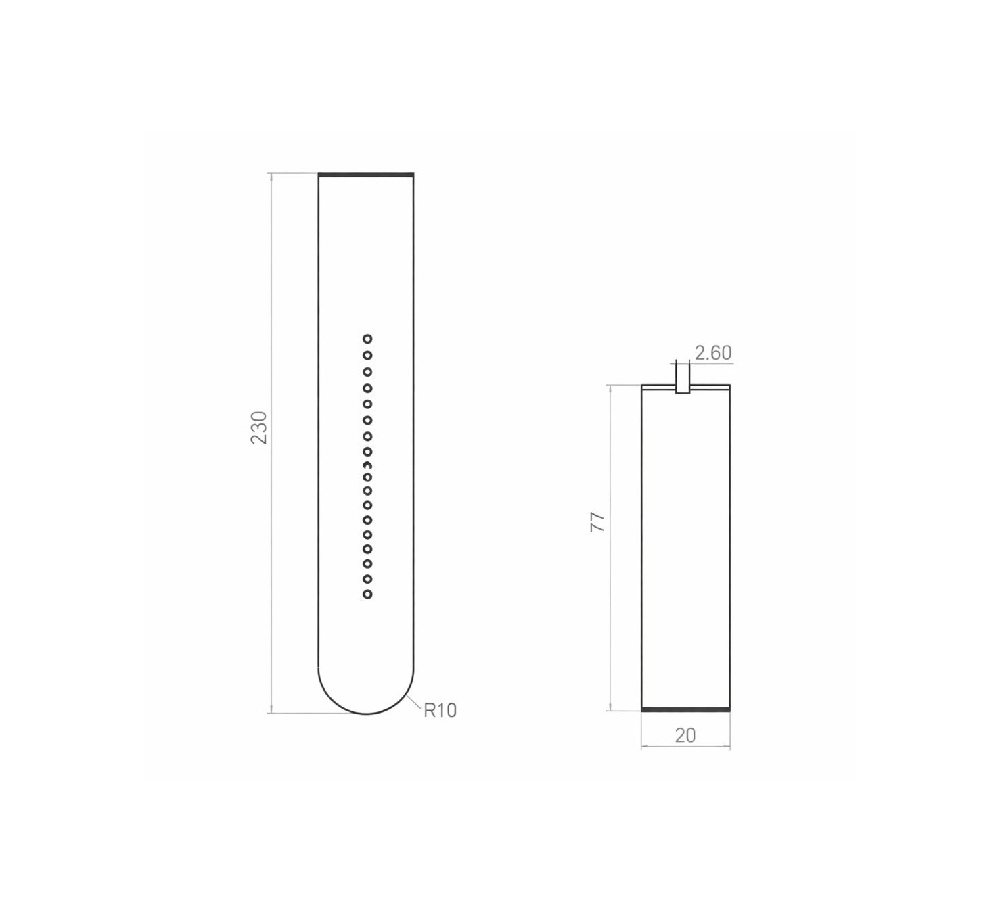
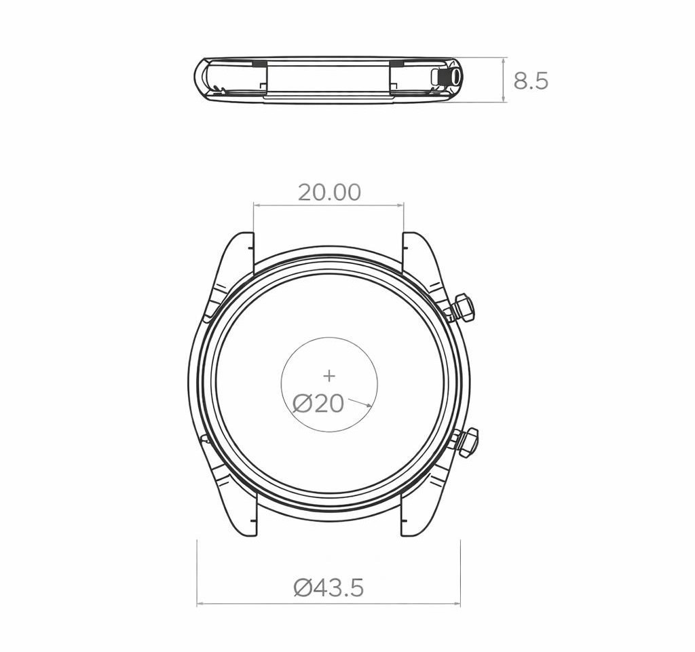

Beats X

El Análisis
Beats X representa una exploración exhaustiva en la convergencia de la estética industrial y el rendimiento mecánico avanzado.
La integración de aleaciones de magnesio con polímeros de tacto suave permitió lograr una apariencia monolítica sin líneas de partición.



La planimetría técnica resultante representa un mapa crítico para la fabricación a gran escala. Cada línea es fruto de un estudio profundo.

